File: 000651.gt.txt (if the image is defective, simply delete all Arabic text and the line will be excluded)

وحاصر بني قريظة شهرا، أو خمسا وعشرين ليلة، فلما اشتد عليهم الحصار أرسلوا
File: 000652.gt.txt (if the image is defective, simply delete all Arabic text and the line will be excluded)
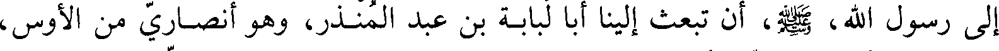
إلى رسول الله، صلي الله عليه و سلم، أن تبعث إلينا أبا لبابة بن عبد المنذر، وهو أنصاري من الأوس،
File: 000653.gt.txt (if the image is defective, simply delete all Arabic text and the line will be excluded)

نستشيره، فأرسله، فلما رأوه قام إليه الرجال، وبكى النساء والصبيان، فرق لهم، فقالوا:
File: 000654.gt.txt (if the image is defective, simply delete all Arabic text and the line will be excluded)

ننزل على حكم رسول الله. فقال: نعم، وأشار بيده إلى حلقه إنه الذبح. قال أبو لبابة:
File: 000655.gt.txt (if the image is defective, simply delete all Arabic text and the line will be excluded)

فما زالت قدماي حتى عرفت أني خنت الله ورسوله، وقلت: والله لا أقمت بمكان عصيت
File: 000656.gt.txt (if the image is defective, simply delete all Arabic text and the line will be excluded)
الله فيه. وانطلق على وجهه حتى ارتبط في المسجد وقال: لا أبرح حتى يتوب الله علي.
File: 000657.gt.txt (if the image is defective, simply delete all Arabic text and the line will be excluded)
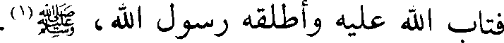
فتاب الله عليه وأطلقه رسول الله، صلي الله عليه و سلم(1).
File: 000658.gt.txt (if the image is defective, simply delete all Arabic text and the line will be excluded)
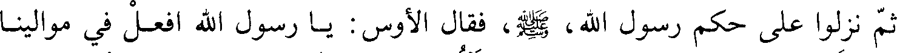
ثم نزلوا على حكم رسول الله صعلم فقال الأوس يا رسول الله افعل في موالينا
File: 000659.gt.txt (if the image is defective, simply delete all Arabic text and the line will be excluded)

مثل ما فعلت في موالي الخزرج يعني بني قينقاع وقد تقدم ذكرهم فقال ألا ترضون
File: 000660.gt.txt (if the image is defective, simply delete all Arabic text and the line will be excluded)

أن يحكم فيهم سعد بن معاذ؟ قالوا: بلى. فأتاه قومه فاحتملوه على حمار، ثم أقبلوا معه
File: 000661.gt.txt (if the image is defective, simply delete all Arabic text and the line will be excluded)

إلى رسول الله، صلي الله عليه و سلم، وهم يقولون: يا أبا عمرو أحسن إلى مواليك. فلما كثروا عليه
File: 000662.gt.txt (if the image is defective, simply delete all Arabic text and the line will be excluded)
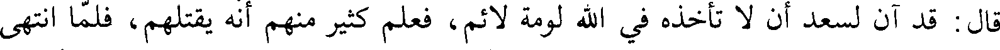
قال: قد آن لسعد أن لا تأخذه في الله لومة لائم، فعلم كثير منهم انه يقتلهم، فلما انتهى
File: 000663.gt.txt (if the image is defective, simply delete all Arabic text and the line will be excluded)

سعد إلى رسول الله، صلي الله عليه و سلم، قال: قوموا إلى سيدكم، أو قال: خيركم، فقاموا إليه وأنزلوه
File: 000664.gt.txt (if the image is defective, simply delete all Arabic text and the line will be excluded)

وقالوا: يا أبا عمرو أحسن إلى مواليك فقد رد رسول الله، صلي الله عليه و صلم،الحكم فيهم إليك. فقال
File: 000665.gt.txt (if the image is defective, simply delete all Arabic text and the line will be excluded)
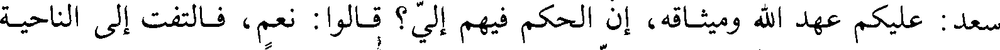
سعد: عليكم عهد الله وميثاقه، أن الحكم فيهم إلي؟ قالوا: نعم، فالتفت إلى الناحية
File: 000666.gt.txt (if the image is defective, simply delete all Arabic text and the line will be excluded)
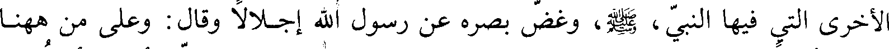
الأخرى التي فيها النبي، صلي الله عليه و سلم، وغض بصره عن رسول الله إجلالا وقال: وعلى من هاهنا
File: 000667.gt.txt (if the image is defective, simply delete all Arabic text and the line will be excluded)

العهد أيضا؟ فقالوا: نعم. وقال رسول الله، صلي الله عليه و سلم: نعم. قال: فإني أحكم أن تقتل
File: 000668.gt.txt (if the image is defective, simply delete all Arabic text and the line will be excluded)
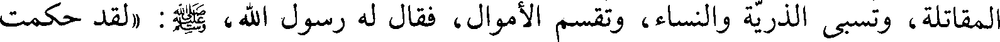
المقاتلة، وتسبى الذرية والنساء، وتقسم الأموال، فقال له رسول الله، صلي الله عليه و سلم: (لقد حكمت
File: 000669.gt.txt (if the image is defective, simply delete all Arabic text and the line will be excluded)
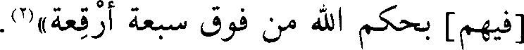
[فيهم] بحكم الله من فوق سبعة أرقعة)(2).
File: 000670.gt.txt (if the image is defective, simply delete all Arabic text and the line will be excluded)

ثم استنزلوا فحبسوا في دار بنت الحارث امرأة من بني النجار. ثم خرج رسول
File: 000671.gt.txt (if the image is defective, simply delete all Arabic text and the line will be excluded)

الله، صلي الله عليه و سلم، إلى سوق المدينة فخندق بها خنادق، ثم بعث إليهم فضرب أعناقهم فيها،
File: 000672.gt.txt (if the image is defective, simply delete all Arabic text and the line will be excluded)

وفيهم حيي بن أخطب، وكعب بن أسد سيدهم وكانوا(3) ستمائة أو سبعمائة، وقيل: ما
File: 000673.gt.txt (if the image is defective, simply delete all Arabic text and the line will be excluded)

بين سبعمائة وثمانمائة، وأتي بحيي بن أخطب وهو مكتوف، فلما رأى النبي، صلي الله عليه و سلم، قال:
File: 000674.gt.txt (if the image is defective, simply delete all Arabic text and the line will be excluded)
والله ما لمت نفسي في عداوتك، ولكن من يخذل الله يخذل. ثم قال للناس: إنه لا بأس
File: 000675.gt.txt (if the image is defective, simply delete all Arabic text and the line will be excluded)

بأمر الله، كتاب وقدر وملحمة كتبت على بني إسرائيل: فاجلس وضربت عنقه، ولم تقتل
File: 000676.gt.txt (if the image is defective, simply delete all Arabic text and the line will be excluded)
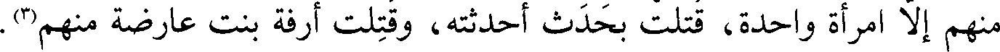
منهم إلا امرأة واحدة، قتلت بحدث أحدثته، وقتلت أرفعة بنت عارضة منهم(3).
File: 000677.gt.txt (if the image is defective, simply delete all Arabic text and the line will be excluded)
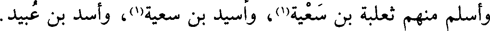
وأسلم منهم ثعلبة بن سعية(1)، وأسيد بن سعية(1) وأسيد بن عبيد
File: 000678.gt.txt (if the image is defective, simply delete all Arabic text and the line will be excluded)

ثم قسم رسول الله، صلي الله عليه و سلم، أموالهم، فكان للفارس ثلاثة أسهم، للفرس سهمان،
File: 000679.gt.txt (if the image is defective, simply delete all Arabic text and the line will be excluded)

ولفارسه سهم، وللراجل ممن ليس له فرس سهم، وكانت الخيل ستة وثلاثين فرسا،
File: 000680.gt.txt (if the image is defective, simply delete all Arabic text and the line will be excluded)

وأخرج منها الخمس، وكان أول فيء وقع فيه السهمان والخمس(2).
File: 000681.gt.txt (if the image is defective, simply delete all Arabic text and the line will be excluded)

واصطفى رسول الله، صلي الله عليه و سلم، لنفسه ريحانة بنت عمرو بن خنافة(3) من بني قريظة،
File: 000682.gt.txt (if the image is defective, simply delete all Arabic text and the line will be excluded)
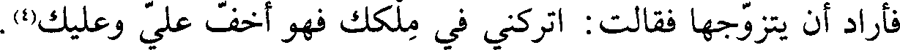
فأراد أن يتزوجها فقالت: اتركني في ملكك فهو أخف علي وعليك(4).
File: 000683.gt.txt (if the image is defective, simply delete all Arabic text and the line will be excluded)
فلما انقضى أمر قريظة انفجر جرح سعد بن معاذ واستجاب الله دعاءه، وكان في
File: 000684.gt.txt (if the image is defective, simply delete all Arabic text and the line will be excluded)
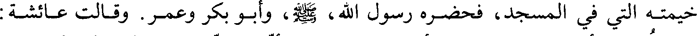
خيمته التي في المسجد، فحضره رسول الله، صلي الله عليه و سلم، وأبو بكر وعمر. وقالت عائشة:
File: 000685.gt.txt (if the image is defective, simply delete all Arabic text and the line will be excluded)
سمعت بكاء أبي بكر وعمر عليه وأنا في حجرتي، وأما النبي، صلي الله عليه و سلم، فكان لا يبكي على
File: 000686.gt.txt (if the image is defective, simply delete all Arabic text and the line will be excluded)
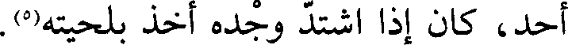
أحد، كان إذا اشتد وجده اخذ بلحيته(5).
File: 000687.gt.txt (if the image is defective, simply delete all Arabic text and the line will be excluded)

وكان فتح قريظة في ذي القعدة وصدر ذي الحجة، وقتل من المسلمينفي الخندق
File: 000688.gt.txt (if the image is defective, simply delete all Arabic text and the line will be excluded)
ستة نفر، وفي قريظة ثلاثة نفر(6).
File: 000689.gt.txt (if the image is defective, simply delete all Arabic text and the line will be excluded)
ودخلت سنة ست من الهجرة
File: 000690.gt.txt (if the image is defective, simply delete all Arabic text and the line will be excluded)

ذكر غزوة بني لحيان(1)
File: 000691.gt.txt (if the image is defective, simply delete all Arabic text and the line will be excluded)

في جمادى الأولى منها خرج رسول الله، صلي الله عليه و سلم، إلى بني لحيان يطلب بأصحاب
File: 000692.gt.txt (if the image is defective, simply delete all Arabic text and the line will be excluded)

الرجيع، خبيب بن عدي وأصحابه، وأظهر أنه يريد الشام ليصيب من القوم غرة، واغد
File: 000693.gt.txt (if the image is defective, simply delete all Arabic text and the line will be excluded)
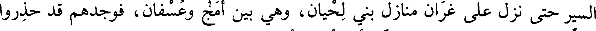
السير حتى نزل على غران منازل بني لحيان، وهي بين أمج وعسفان، فوجدهم قد حذروا
File: 000694.gt.txt (if the image is defective, simply delete all Arabic text and the line will be excluded)
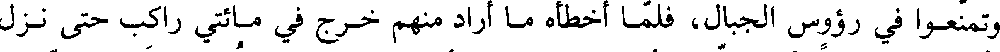
وتمنعوا في رؤوس الجبال، فلما أخطأه ما أراد منهم خرج في مائتي راكب حتى نزل
File: 000695.gt.txt (if the image is defective, simply delete all Arabic text and the line will be excluded)
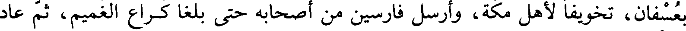
بعسفان، تخويفا لأهل مكة، وأرسل فارسين من أصحابه حتى بلغا كراع الغميم، ثم عاد
File: 000696.gt.txt (if the image is defective, simply delete all Arabic text and the line will be excluded)

قافلا(2).
File: 000697.gt.txt (if the image is defective, simply delete all Arabic text and the line will be excluded)
(غران(3): بضم الغين المعجمة، وفتح الراء، وبعد الألف نون. وأمج: بفتح
File: 000698.gt.txt (if the image is defective, simply delete all Arabic text and the line will be excluded)

ذكر غزوة ذي قرد(4)
File: 000699.gt.txt (if the image is defective, simply delete all Arabic text and the line will be excluded)
الهمزة، والميم، وآخره جيم).
File: 000700.gt.txt (if the image is defective, simply delete all Arabic text and the line will be excluded)

ثم قدم رسول الله، صلي الله عليه و سلم، المدينة فلم يقم إلا أياما قلائل، حتى أغار عيينة بن